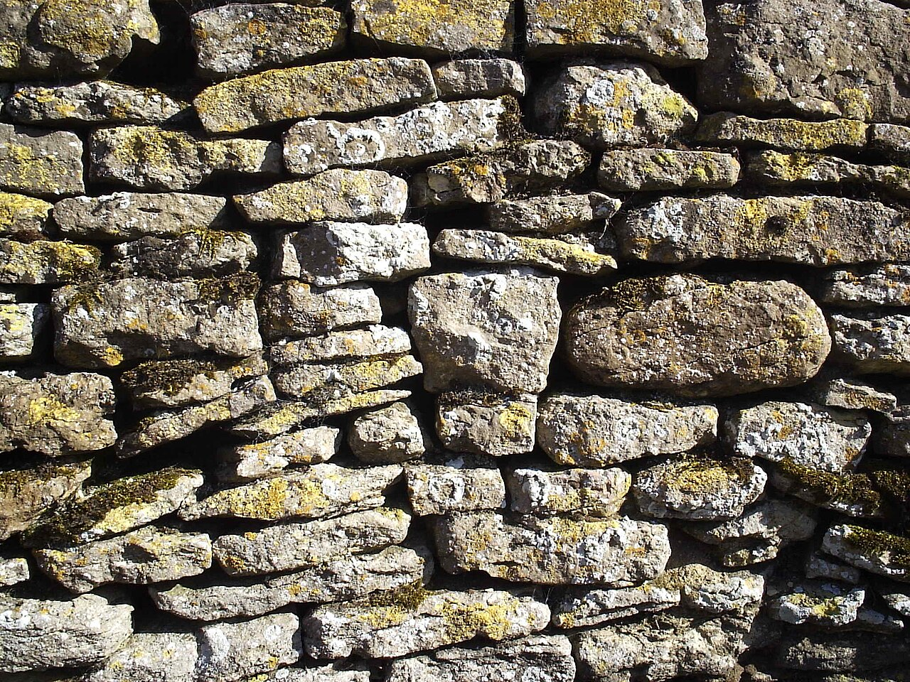
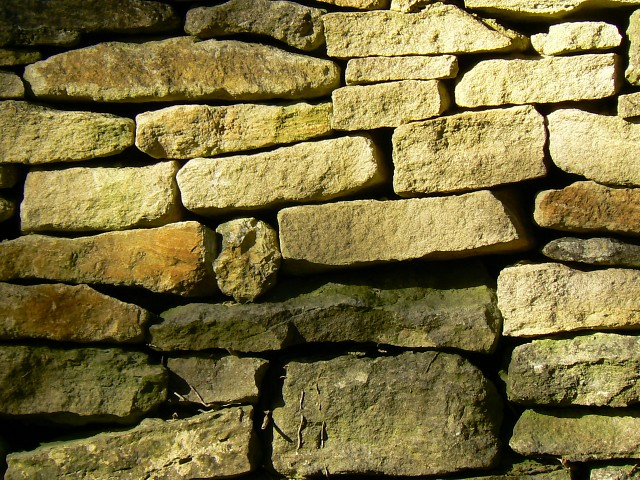
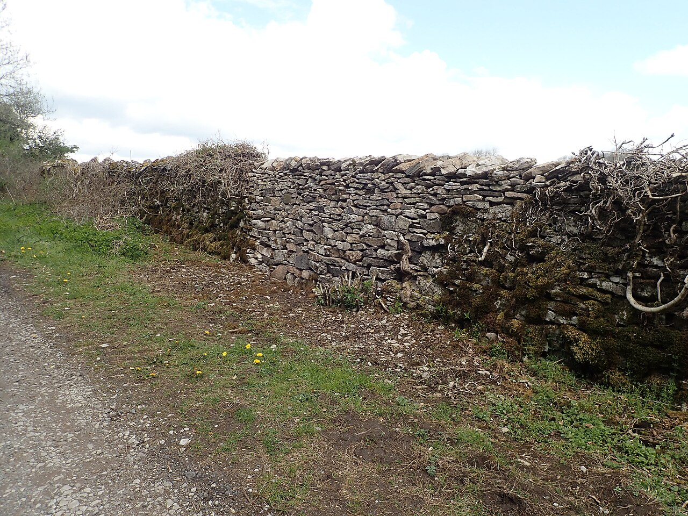
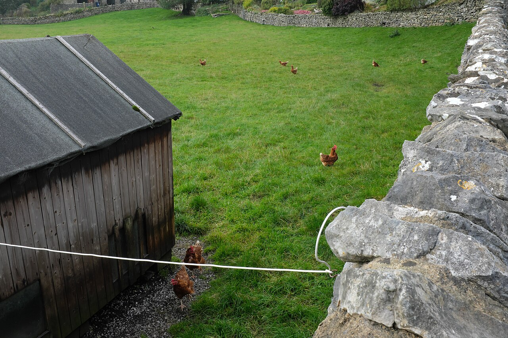

Fieldstone / drystone wall references
Collected 2026-07-05 (Shawn round-8: "Distinct natural stones, fitting together with tight cracks between … stones fitting into all the space"). All images from Wikimedia Commons; geograph.org.uk images are CC BY-SA 2.0, others per their Commons file page.
10 photos. Click a photo to view it large; arrow keys step through.










Notes from the collection
Also ../drystone-fieldstone-detail.jpg (the original round-6 reference): rounded boulders, tight bed contacts, gaps concentrated at head joints and corner pockets, wedge chinkers.
Geometric truths (what every image agrees on)
- The crack network is primary. Stone outlines are not independent shapes: adjacent stones share edge geometry — edges run parallel, a bulge in one stone matches a notch in its neighbour. The builder chose stones to FIT. Generatively that means: build the joint network over the wall face first; the stones are the regions the network bounds. Independent per-cell hulls can never produce this complementarity — this is why E6–E11 always read as separate objects arranged on a grid.
- Stone fills ≥ 90 % of the face. Crack width is ~2–6 % of local stone size (≈ 0.3–0.7 mm at DB scale), roughly uniform along its run. No mortar seas, no per-stone moats, no voids bigger than a thin wedge.
- Beds are long, sub-horizontal, wavy. The eye traces continuous horizontal shadow lines the full width of the wall; head joints are short, staggered, often slanted a few degrees. The network is connected.
- One shape family per wall (one lithology): consistent angularity/roundness; sizes vary 2–4×; small stones appear only as fillers in leftover wedges, not sprinkled at random.
- Faces are near-coplanar. Per-stone proudness is small (±3–6 % of stone size) with a rare outlier; per-stone attitude tilt is a few degrees. The drama comes from the dark crack network and per-stone light tone, not from deep relief.
- Behind every crack is more stone, never a flat backing plane (the E10 hearting guarantee stays).
- Corners are built from the same family, larger and squarer, packed tight.